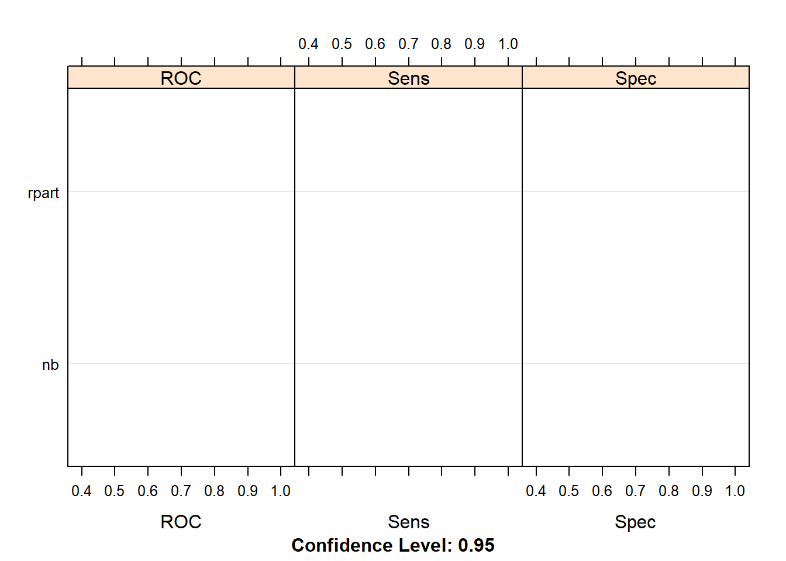
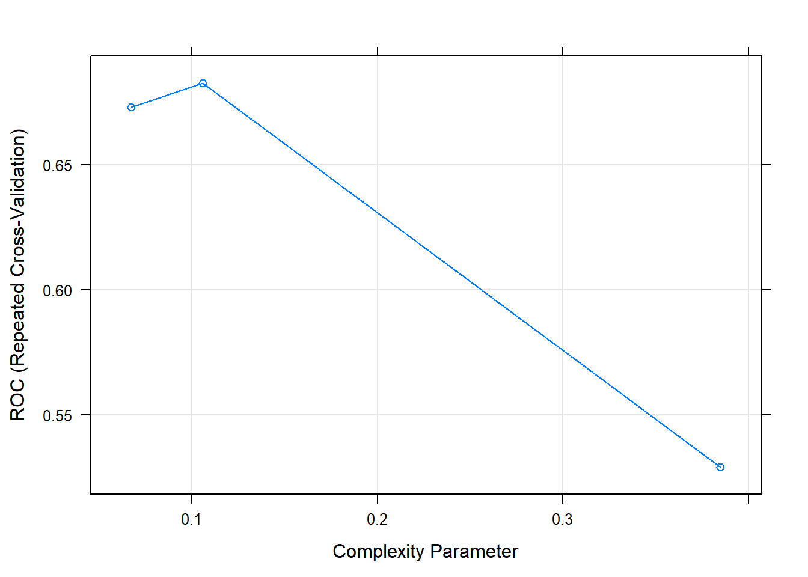
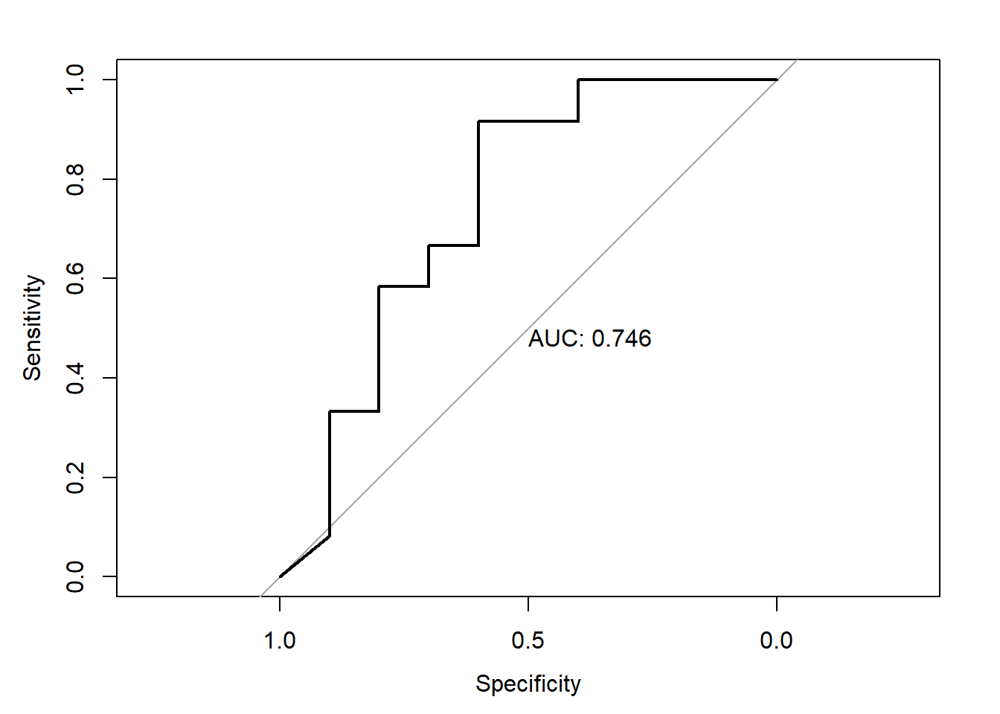
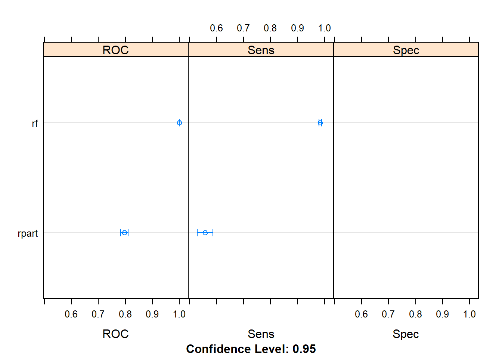
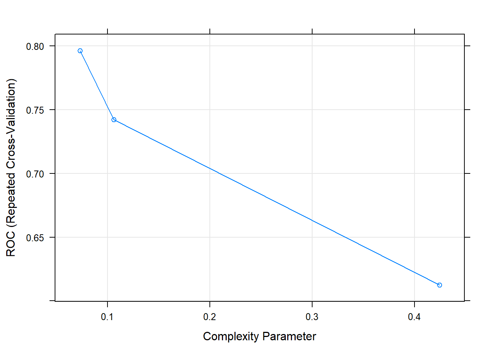
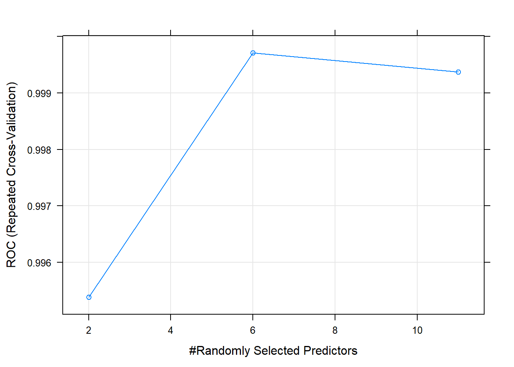
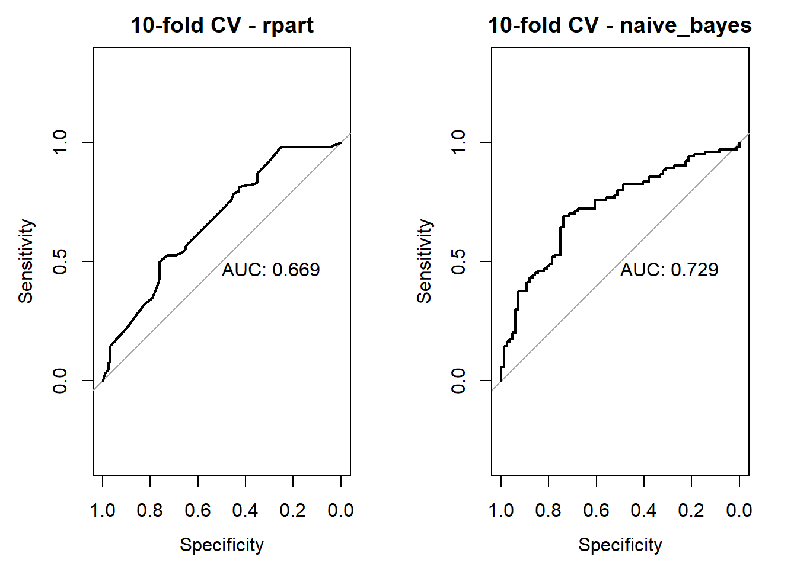
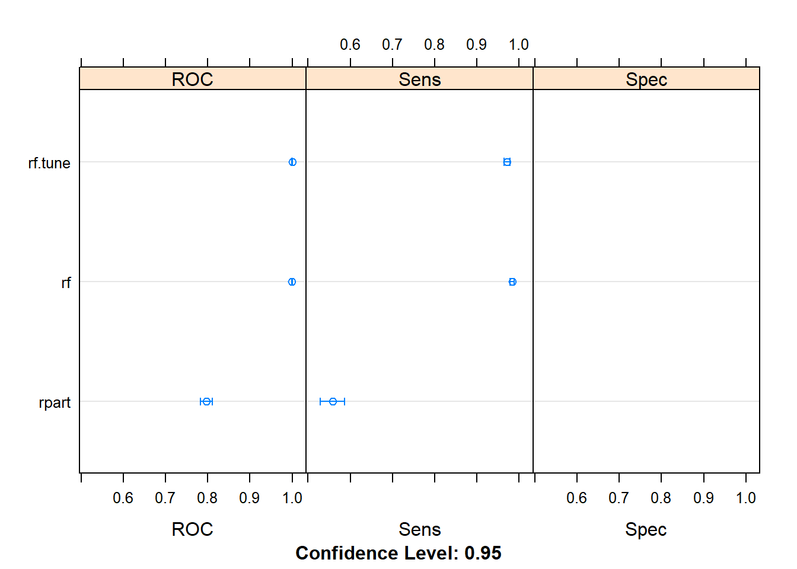

4.5 Assignment Trees - Up Sampling
In this excercise we have a disparity in the frequencies of the observed classes we want to predict. For resolving such a class imbalance we can up sampling our data as described elsewhere: https://topepo.github.io/caret/subsampling-for-class-imbalances.html#subsampling-techniques
4.5.1 load data
library(tidyverse)
library(caret)
library(rpart)
library(rpart.plot)
library(pROC)
data <- read.csv("2.UploadedData/risk_factors_cervical_cancer.csv", na.strings = "?")
## select columns 0/1
colMax <- function(data) sapply(data, max, na.rm = TRUE)
cols<-colMax(data) %>% data.frame(max=.) %>% rownames_to_column("cols") %>%
filter(max==1) %>% .$cols
# factorize columns 0/1
data<-data %>% mutate_at(cols, ~factor(.,levels = 0:1, labels = c("no","yes")))
# excluded columns only with zeros and Dxs
data<-data %>% select(-STDs.AIDS,-STDs.cervical.condylomatosis,
-Dx.CIN, -Dx.HPV, -Dx)summarize the data
## Age Number.of.sexual.partners First.sexual.intercourse
## Min. :13.00 Min. : 1.000 Min. :10
## 1st Qu.:20.00 1st Qu.: 2.000 1st Qu.:15
## Median :25.00 Median : 2.000 Median :17
## Mean :26.82 Mean : 2.528 Mean :17
## 3rd Qu.:32.00 3rd Qu.: 3.000 3rd Qu.:18
## Max. :84.00 Max. :28.000 Max. :32
## NA's :26 NA's :7
## Num.of.pregnancies Smokes Smokes..years. Smokes..packs.year.
## Min. : 0.000 no :722 Min. : 0.00 Min. : 0.0000
## 1st Qu.: 1.000 yes :123 1st Qu.: 0.00 1st Qu.: 0.0000
## Median : 2.000 NA's: 13 Median : 0.00 Median : 0.0000
## Mean : 2.276 Mean : 1.22 Mean : 0.4531
## 3rd Qu.: 3.000 3rd Qu.: 0.00 3rd Qu.: 0.0000
## Max. :11.000 Max. :37.00 Max. :37.0000
## NA's :56 NA's :13 NA's :13
## Hormonal.Contraceptives Hormonal.Contraceptives..years. IUD
## no :269 Min. : 0.000 no :658
## yes :481 1st Qu.: 0.000 yes : 83
## NA's:108 Median : 0.500 NA's:117
## Mean : 2.256
## 3rd Qu.: 3.000
## Max. :30.000
## NA's :108
## IUD..years. STDs STDs..number. STDs.condylomatosis
## Min. : 0.0000 no :674 Min. :0.0000 no :709
## 1st Qu.: 0.0000 yes : 79 1st Qu.:0.0000 yes : 44
## Median : 0.0000 NA's:105 Median :0.0000 NA's:105
## Mean : 0.5148 Mean :0.1766
## 3rd Qu.: 0.0000 3rd Qu.:0.0000
## Max. :19.0000 Max. :4.0000
## NA's :117 NA's :105
## STDs.vaginal.condylomatosis STDs.vulvo.perineal.condylomatosis
## no :749 no :710
## yes : 4 yes : 43
## NA's:105 NA's:105
##
##
##
##
## STDs.syphilis STDs.pelvic.inflammatory.disease STDs.genital.herpes
## no :735 no :752 no :752
## yes : 18 yes : 1 yes : 1
## NA's:105 NA's:105 NA's:105
##
##
##
##
## STDs.molluscum.contagiosum STDs.HIV STDs.Hepatitis.B STDs.HPV
## no :752 no :735 no :752 no :751
## yes : 1 yes : 18 yes : 1 yes : 2
## NA's:105 NA's:105 NA's:105 NA's:105
##
##
##
##
## STDs..Number.of.diagnosis STDs..Time.since.first.diagnosis
## Min. :0.00000 Min. : 1.000
## 1st Qu.:0.00000 1st Qu.: 2.000
## Median :0.00000 Median : 4.000
## Mean :0.08741 Mean : 6.141
## 3rd Qu.:0.00000 3rd Qu.: 8.000
## Max. :3.00000 Max. :22.000
## NA's :787
## STDs..Time.since.last.diagnosis Dx.Cancer Hinselmann Schiller Citology
## Min. : 1.000 no :840 no :823 no :784 no :814
## 1st Qu.: 2.000 yes: 18 yes: 35 yes: 74 yes: 44
## Median : 3.000
## Mean : 5.817
## 3rd Qu.: 7.500
## Max. :22.000
## NA's :787
## Biopsy
## no :803
## yes: 55
##
##
##
##
## ##
## no yes
## 840 184.5.2 Up sample data
# upsample data
set.seed(1)
up_data <- upSample(x = data[, !colnames(data) %in% "Dx.Cancer"],
y = data$Dx.Cancer)
# sumarize it
# now the dependent variable is named 'Class'
table(up_data$Class)##
## no yes
## 840 840missing data

new data
4.5.3 Classification tree by two methods
# learn tree with Gini impurity
tree.gini<-rpart(Class~.,data = up_data, cp = 0.1)
# learn tree with information gain
tree.information<-rpart(Class~., data=up_data,
parms=list(split="information"))
par(mfrow=c(1,2))
plot(tree.information,main="Information")
text(tree.information)
plot(tree.gini, main="Gini")
text(tree.gini)
4.5.4 train models CART and RF with repeated 3*10-fold CV
#
# set definitions
metric <- "ROC"
control <- trainControl(method="repeatedcv", number=10,
summaryFunction=twoClassSummary,
classProbs=T,
savePredictions = TRUE, repeats=3)
set.seed(7)
fit.cart.rcv <- train(Class ~ ., data=up_data, method="rpart", metric=metric, trControl=control,
na.action=na.exclude)
set.seed(7)
fit.rf.rcv <- train(Class ~ ., data=up_data, method="rf", metric=metric, trControl=control,
na.action=na.exclude)compare CART with RF
fit.models <- list(rpart=fit.cart.rcv, rf=fit.rf.rcv)
results <- resamples(fit.models)
summary(results)##
## Call:
## summary.resamples(object = results)
##
## Models: rpart, rf
## Number of resamples: 30
##
## ROC
## Min. 1st Qu. Median Mean 3rd Qu. Max. NA's
## rpart 0.7135285 0.7658426 0.802456 0.7964733 0.8246275 0.8639241 0
## rf 0.9937500 1.0000000 1.000000 0.9997116 1.0000000 1.0000000 0
##
## Sens
## Min. 1st Qu. Median Mean 3rd Qu. Max. NA's
## rpart 0.4125 0.49375 0.55625 0.5578270 0.621875 0.725 0
## rf 0.9500 0.97500 0.98750 0.9841086 0.996875 1.000 0
##
## Spec
## Min. 1st Qu. Median Mean 3rd Qu. Max. NA's
## rpart 1 1 1 1 1 1 0
## rf 1 1 1 1 1 1 0par(mfrow=c(1,2))
rocs <- lapply(fit.models, function(fit){plot.roc(fit$pred$obs,fit$pred$yes,
main=paste("3x10-fold-CV",fit$method),
debug=F, print.auc=T)})

## CART
##
## 1680 samples
## 11 predictor
## 2 classes: 'no', 'yes'
##
## No pre-processing
## Resampling: Cross-Validated (10 fold, repeated 3 times)
## Summary of sample sizes: 1428, 1428, 1428, 1428, 1428, 1429, ...
## Resampling results across tuning parameters:
##
## cp ROC Sens Spec
## 0.07341772 0.7964733 0.5578270 1.0000000
## 0.10632911 0.7422564 0.5414926 0.9299578
## 0.42405063 0.6123734 0.7104008 0.5143460
##
## ROC was used to select the optimal model using the largest value.
## The final value used for the model was cp = 0.07341772.## Random Forest
##
## 1680 samples
## 11 predictor
## 2 classes: 'no', 'yes'
##
## No pre-processing
## Resampling: Cross-Validated (10 fold, repeated 3 times)
## Summary of sample sizes: 1428, 1428, 1428, 1428, 1428, 1429, ...
## Resampling results across tuning parameters:
##
## mtry ROC Sens Spec
## 2 0.9953841 0.9259124 1
## 6 0.9997116 0.9841086 1
## 11 0.9993697 0.9811709 1
##
## ROC was used to select the optimal model using the largest value.
## The final value used for the model was mtry = 6.

tunning RF model
myGrid<-expand.grid(mtry=1:11) # number of variables when constructing the RF
set.seed(7)
fit.rf.rcv.tune <- train(Class ~ ., data=up_data,
method="rf", metric=metric,
trControl=control,
tuneGrid = myGrid,
na.action=na.exclude)compare the 3 models
fit.models<-list(rpart=fit.cart.rcv,rf = fit.rf.rcv, rf.tune=fit.rf.rcv.tune)
results<-resamples(fit.models)
summary(results)##
## Call:
## summary.resamples(object = results)
##
## Models: rpart, rf, rf.tune
## Number of resamples: 30
##
## ROC
## Min. 1st Qu. Median Mean 3rd Qu. Max. NA's
## rpart 0.7135285 0.7658426 0.802456 0.7964733 0.8246275 0.8639241 0
## rf 0.9937500 1.0000000 1.000000 0.9997116 1.0000000 1.0000000 0
## rf.tune 0.9978369 1.0000000 1.000000 0.9998749 1.0000000 1.0000000 0
##
## Sens
## Min. 1st Qu. Median Mean 3rd Qu. Max. NA's
## rpart 0.4125000 0.49375 0.55625 0.5578270 0.6218750 0.725 0
## rf 0.9500000 0.97500 0.98750 0.9841086 0.9968750 1.000 0
## rf.tune 0.9240506 0.96250 0.97500 0.9719673 0.9873418 1.000 0
##
## Spec
## Min. 1st Qu. Median Mean 3rd Qu. Max. NA's
## rpart 1 1 1 1 1 1 0
## rf 1 1 1 1 1 1 0
## rf.tune 1 1 1 1 1 1 0ROCs from models
par(mfrow=c(1,3))
rocs<-lapply(fit.models,
function(fit){plot.roc(fit$pred$obs,
fit$pred$yes,
main=paste("3x10-fold CV-",fit$method),debug=F,print.auc=T)})
Compare accuracy of models

http://www.sthda.com/english/articles/35-statistical-machine-learning-essentials/141-cart-model-decision-tree-essentials https://bradleyboehmke.github.io/HOML/DT.html https://topepo.github.io/caret/subsampling-for-class-imbalances.html#subsampling-techniques https://www.machinelearningplus.com/machine-learning/logistic-regression-tutorial-examples-r/